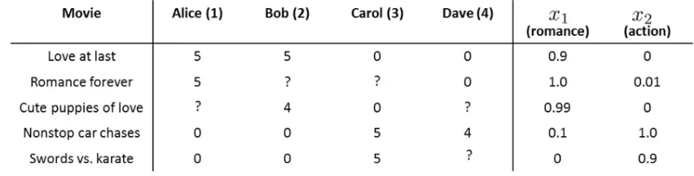
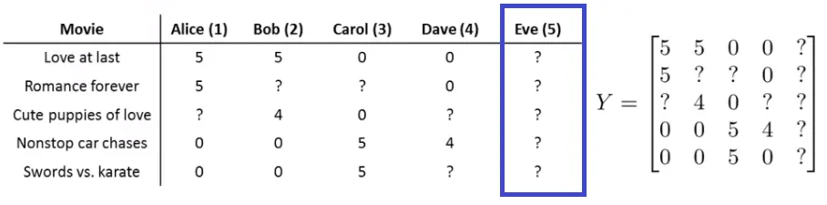

Recommendation Systems
Recommendation systems are a fundamental component in the interface between users and large-scale content providers like Amazon, eBay, and iTunes. These systems personalize user experiences by suggesting products, movies, or content based on past interactions and preferences.
Concept of Recommender Systems
- Purpose: To recommend new content or products to users based on their historical interactions or preferences.
- Nature: Not a single algorithm, but a category of methods tailored to predicting user preferences.
Example Scenario: Movie Rating Prediction
Imagine a company that sells movies and allows users to rate them. Consider the following setup:
- Movies: A catalog of five movies.
- Users: A database of four users.
- User Ratings: Users rate movies on a scale of 1 to 5.

Notations:
- $n_u$: Number of users.
- $n_m$: Number of movies.
- $r(i, j)$: Indicator (1 or 0) if user $j$ has rated movie $i$.
- $y^{(i, j)}$: Rating given by user $j$ to movie $i$.
Feature Vectors and Parameter Vectors
- Movie Features: Each movie can have a feature vector representing various attributes or genres.
- Additional Feature ($x_0 = 1$): For computational convenience, an additional feature is added to each movie's feature vector.
Example for "Cute Puppies of Love":
$$ x^{(3)} = \begin{bmatrix} 1 \\ 0.99 \\ 0 \end{bmatrix} $$
- User Parameters: Each user has a parameter vector representing their preferences.
Example for user 1 (Alice) and her preference for "Cute Puppies of Love":
$$ \theta^{(1)} = \begin{bmatrix} 0 \\ 5 \\ 0 \end{bmatrix} $$
Making Predictions
To predict how much Alice might like "Cute Puppies of Love", we compute:
$$ (\theta^{(1)})^T x^{(3)} = (0 \cdot 1) + (5 \cdot 0.99) + (0 \cdot 0) = 4.95 $$
This predicts a high rating of 4.95 out of 5 for Alice for this movie, based on her preference parameters and the movie's features.
Here is an example implementation in Python:
import numpy as np
# Feature vector for the movie "Cute Puppies of Love"
x_cute_puppies = np.array([1, 0.99, 0])
# Parameter vector for Alice
theta_alice = np.array([0, 5, 0])
# Compute the dot product
predicted_rating = np.dot(theta_alice, x_cute_puppies)
# Print the predicted rating
print(f"Predicted rating for Alice for 'Cute Puppies of Love': {predicted_rating}")When you run this code, it will output:
Predicted rating for Alice for 'Cute Puppies of Love': 4.95Collaborative Filtering
- Method: Collaborative filtering is often used in recommender systems. It involves learning user and item factors from observed interactions, jointly or through alternating conditional subproblems.
- Learning: This can be achieved using algorithms like gradient descent.
- Advantage: The system can learn to make recommendations on its own without explicit programming of the features or preferences.
Learning User Preferences in Recommendation Systems
In recommendation systems, learning user preferences $(\theta^j)$ is a key component. This process is akin to linear regression, but with a unique approach tailored for recommendation contexts.
Minimizing Cost Function for User Preferences
- The objective is to minimize the following cost function for each user $j$:
$$ \min_{\theta^j} = \frac{1}{2m^{(j)}} \sum_{i:r(i,j)=1} \left((\theta^{(j)})^T(x^{(i)}) - y^{(i,j)}\right)^2 + \frac{\lambda}{2m^{(j)}} \sum_{k=1}^{n} (\theta_k^{(j)})^2 $$
- Here, $m^{(j)}$ is the number of movies rated by user $j$, $\lambda$ is the regularization parameter, and $r(i, j)$ indicates whether user $j$ has rated movie $i$.
Gradient Descent for Optimization
Update Rule for $\theta_k^{(j)}$:
- For $k = 0$ (bias term):
$$ \theta_k^{(j)} := \theta_k^{(j)} - \frac{\alpha}{m^{(j)}} \sum_{i:r(i,j)=1} \left((\theta^{(j)})^T(x^{(i)}) - y^{(i,j)}\right) x_k^{(i)} $$
- For $k \neq 0$:
$$ \theta_k^{(j)} := \theta_k^{(j)} - \frac{\alpha}{m^{(j)}} \left(\sum_{i:r(i,j)=1} \left((\theta^{(j)})^T(x^{(i)}) - y^{(i,j)}\right) x_k^{(i)} + \lambda \theta_k^{(j)}\right) $$
Collaborative Filtering Algorithm
Collaborative filtering leverages the interplay between user preferences and item (movie) features:
- Learning Features from Preferences: Given user preferences $(\theta^{(1)}, ..., \theta^{(n_u)})$, the algorithm can learn movie features $(x^{(1)}, ..., x^{(n_m)})$.
- Cost Function for Movies:
$$ \min_{x^{(1)}, ..., x^{(n_m)}} \frac{1}{2} \sum_{i=1}^{n_m} \sum_{j:r(i,j)=1} \left((\theta^{(j)})^T(x^{(i)}) - y^{(i,j)}\right)^2 + \frac{\lambda}{2} \sum_{i=1}^{n_m} \sum_{k=1}^{n} (x_k^{(i)})^2 $$
- Iterative Process: The algorithm typically involves an iterative process, alternating between optimizing for movie features and user preferences.
Collaborative Filtering Implementation
Here, we'll implement a basic collaborative filtering model using gradient descent to predict user ratings for movies.
Step 1: Data Setup
First, we need to set up our data, including user ratings and an indicator matrix showing which movies have been rated by which users.
import numpy as np
# Number of users and movies
n_u = 4
n_m = 5
# User ratings matrix (0 if not rated)
ratings = np.array([
[5, 4, 0, 0, 3],
[0, 0, 4, 0, 4],
[0, 0, 5, 3, 3],
[3, 4, 0, 0, 5]
]).T # rows are movies; columns are users
# Indicator matrix r(i, j) = 1 if rated, 0 otherwise
R = (ratings != 0).astype(int)Step 2: Feature and Parameter Initialization
We initialize random feature vectors for movies and parameter vectors for users.
# Initialize random movie feature vectors (3 features per movie)
rng = np.random.default_rng(0)
X = rng.random((n_m, 3))
# Initialize random user parameter vectors (3 parameters per user)
Theta = rng.random((n_u, 3))Step 3: Collaborative Filtering Cost Function
We define the cost function for collaborative filtering, including regularization.
def collaborative_filtering_cost(X, Theta, ratings, R, lambda_=0.1):
predictions = X.dot(Theta.T)
error = (predictions - ratings) * R
cost = 0.5 * np.sum(error ** 2)
# Regularization
cost += (lambda_ / 2) * (np.sum(Theta ** 2) + np.sum(X ** 2))
return cost
cost = collaborative_filtering_cost(X, Theta, ratings, R)
print(f'Initial cost: {cost}')Step 4: Gradient Descent for Optimization
We implement gradient descent to optimize the feature and parameter vectors.
def collaborative_filtering_gradient(X, Theta, ratings, R, alpha=0.01, lambda_=0.1, iterations=1000):
for _ in range(iterations):
predictions = X.dot(Theta.T)
error = (predictions - ratings) * R
X_grad = error.dot(Theta) + lambda_ * X
Theta_grad = error.T.dot(X) + lambda_ * Theta
X -= alpha * X_grad
Theta -= alpha * Theta_grad
if _ % 100 == 0:
cost = collaborative_filtering_cost(X, Theta, ratings, R, lambda_)
print(f'Iteration {_}: cost = {cost}')
return X, Theta
X, Theta = collaborative_filtering_gradient(X, Theta, ratings, R)Step 5: Prediction
Finally, we use the optimized feature and parameter vectors to predict ratings for all users and movies.
# Predict ratings for all users and movies
predictions = X.dot(Theta.T)
# Print predictions
print("Predicted ratings:")
print(predictions)Vectorization: Low Rank Matrix Factorization
- Matrix Y: Organize all user ratings into a matrix Y, which represents the interactions between users and movies.
Example $[5 \times 4]$ Matrix Y for 5 movies and 4 users:
$$ Y = \begin{pmatrix} 5 & 5 & 0 & 0 \\ 5 & ? & ? & 0 \\ ? & 4 & 0 & ? \\ 0 & 0 & 5 & 4 \\ 0 & 0 & 5 & 0 \end{pmatrix} $$
- Predicted Ratings Matrix: The predicted ratings can be expressed as the product of matrices $X$ and $\Theta^T$.
$$ X \Theta^T = \begin{pmatrix} (\theta^{(1)})^T(x^{(1)}) & \dots & (\theta^{(n_u)})^T(x^{(1)}) \\ \vdots & \ddots & \vdots \\ (\theta^{(1)})^T(x^{(n_m)}) & \dots & (\theta^{(n_u)})^T(x^{(n_m)}) \end{pmatrix} $$
- Matrix X: Contains the features for each movie, stacked in rows.
- Matrix $\Theta$: Contains the user preferences, also stacked in rows.
Low Rank Matrix Factorization Example Implementation
To implement the low-rank matrix factorization for collaborative filtering, we need to set up the necessary matrices and perform the matrix multiplication to predict ratings. Here's how to do it in Python.
Step 1: Define the Matrix Y
Organize all user ratings into a matrix $Y$, which represents the interactions between users and movies.
import numpy as np
# Example [5 x 4] Matrix Y for 5 movies and 4 users
Y = np.array([
[5, 5, 0, 0],
[5, 0, 0, 0],
[0, 4, 0, 0],
[0, 0, 5, 4],
[0, 0, 5, 0]
])
print("Matrix Y:")
print(Y)Step 2: Initialize Matrices X and Θ
Matrix $X$ contains the features for each movie, and matrix $\Theta$ contains the user preferences.
# Number of movies (n_m) and users (n_u)
n_m, n_u = Y.shape
# Number of features
n_features = 3
# Initialize movie feature matrix X and user preference matrix Theta with random values
rng = np.random.default_rng(0)
X = rng.random((n_m, n_features))
Theta = rng.random((n_u, n_features))
print("\nInitial Matrix X (Movie Features):")
print(X)
print("\nInitial Matrix Θ (User Preferences):")
print(Theta)Step 3: Compute the Predicted Ratings Matrix
The predicted ratings matrix can be expressed as the product of matrices $X$ and $\Theta^T$.
# Compute the predicted ratings
predicted_ratings = X.dot(Theta.T)
print("\nPredicted Ratings Matrix XΘ^T:")
print(predicted_ratings)This Python code demonstrates the setup of matrices $Y$, $X$, and $\Theta$, and the calculation of the predicted ratings matrix using matrix multiplication. The matrix $X$ contains the features for each movie, and $\Theta$ contains the user preferences. The predicted ratings matrix is obtained by multiplying $X$ with the transpose of $\Theta$.
Scenario: A User with No Ratings
Imagine a user in a movie recommendation system who hasn't rated any movies. This scenario presents a challenge for typical collaborative filtering algorithms.

- For such a user, there are no movies for which $r(i, j) = 1$.
- As a result, the algorithm ends up minimizing only the regularization term for this user, which doesn't provide meaningful insight for recommendations.
Mean Normalization Approach
- Compute the Mean Rating: Calculate the average rating for each movie and store these in a vector $\mu$.
Example $\mu$ vector for a system with 5 movies:
$$ \mu = \begin{bmatrix} 5\\5\\4\\4.5\\5 \end{bmatrix} $$
- Normalize the Ratings Matrix: Subtract the mean rating for each movie from all its ratings in the matrix $Y$.
Normalized Ratings Matrix $Y$:
$$ Y_{\mathrm{centered}} = \begin{pmatrix} 0&0&?&?&?\\ 0&?&?&?&?\\ ?&0&?&?&?\\ ?&?&0.5&-0.5&?\\ ?&?&0&?&? \end{pmatrix} $$
- Adjust for Users with No Ratings: For a new user with no ratings, their predicted rating for each movie can be initialized to the mean rating of that movie. This provides a baseline from which personalized recommendations can evolve as the user starts rating movies.
Implementation in Python
Step 1: Define the Matrix Y and Compute Mean Ratings
import numpy as np
# Example [5 x 4] Matrix Y for 5 movies and 4 users
Y = np.array([
[5, 5, 0, 0],
[5, 0, 0, 0],
[0, 4, 0, 0],
[0, 0, 5, 4],
[0, 0, 5, 0]
])
# Compute the mean rating for each movie, ignoring zeros
mean_ratings = np.true_divide(Y.sum(1), (Y != 0).sum(1))
print("Mean Ratings Vector μ:")
print(mean_ratings)Step 2: Normalize the Ratings Matrix
# Subtract the mean rating for each movie from all its ratings
Y_normalized = Y - mean_ratings[:, np.newaxis]
# Ensure we do not subtract from places where rating was 0
Y_normalized[Y == 0] = 0
print("\nNormalized Ratings Matrix Y:")
print(Y_normalized)Step 3: Adjust for Users with No Ratings
For a new user with no ratings, their predicted rating for each movie can be initialized to the mean rating of that movie.
# Predicted ratings for a new user with no ratings
new_user_ratings = mean_ratings.copy()
print("\nPredicted Ratings for New User with No Ratings:")
print(new_user_ratings)Benefits of Mean Normalization
- Handling New Users: Provides a starting point for recommendations for users who have not yet provided any ratings.
- Rating Sparsity: Mitigates issues arising from sparse data, which is common in many real-world recommendation systems.
- Balancing the Dataset: Normalization helps in balancing the dataset, especially when there are variations in the number of ratings per movie.
Shapes and Missingness Define the Objective
Fix the orientation $Y\in\mathbb R^{n_m\times n_u}$: rows are movies and columns users. Let $X\in\mathbb R^{n_m\times k}$ and $\Theta\in\mathbb R^{n_u\times k}$, so $X\Theta^\top$ has exactly the rating matrix's shape. A four-user, five-movie array supplied with users in rows must be transposed before using this convention.
A missing rating is not an observed rating of zero. The earlier one-to-five-star fixtures can use zero as a storage sentinel because zero is outside their valid range. A general implementation needs a separate observation mask, allowing zero to be legitimate data or a centered observed rating.
The masked objective is
$$ J(X,\Theta)=\frac12\sum_{(i,j):R_{ij}=1} (x_i^\top\theta_j-Y_{ij})^2 +\frac\lambda2(\|X\|_F^2+\|\Theta\|_F^2). $$
Define E to equal the prediction error at observed entries and zero elsewhere. Then
$$ \nabla_XJ=E\Theta+\lambda X,\qquad \nabla_\Theta J=E^\top X+\lambda\Theta. $$
Both gradients must use the same pre-update factors. If missing values are stored as NaN, multiplying a whole residual matrix by zero is insufficient because zero times NaN remains NaN. The code assigns residuals only at observed positions.
Worked Cost and Gradient Calculation
Use three items and two users with observed ratings $Y_{11}=5,Y_{21}=3,Y_{22}=4,Y_{32}=1$. Set item factors $(1,0.5),(0.5,1),(1,1)$ and user factors $(1,2),(2,1)$. Predictions are
$$ X\Theta^\top=\begin{bmatrix}2&2.5\\2.5&2\\3&3\end{bmatrix}, \qquad E=\begin{bmatrix}-3&0\\-0.5&-2\\0&2\end{bmatrix}. $$
The data term is $(9+0.25+4+4)/2=8.625$. Squared factor norms total 14.5, so $\lambda=0.1$ contributes 0.725, giving objective 9.35. The first item gradient is $-3(1,2)+0.1(1,0.5)=(-2.9,-5.95)$.
import numpy as np
ratings = np.array([[5.0, np.nan], [3.0, 4.0], [np.nan, 1.0]])
observed = np.isfinite(ratings)
X = np.array([[1.0, 0.5], [0.5, 1.0], [1.0, 1.0]])
Theta = np.array([[1.0, 2.0], [2.0, 1.0]])
lam = 0.1
def objective_gradient(X, Theta, ratings):
prediction = X @ Theta.T
residual = np.zeros_like(prediction)
residual[observed] = prediction[observed] - ratings[observed]
loss = 0.5 * np.sum(residual ** 2) + lam / 2 * (np.sum(X ** 2) + np.sum(Theta ** 2))
return (loss, residual @ Theta + lam * X, residual.T @ X + lam * Theta)
loss, gX, gTheta = objective_gradient(X, Theta, ratings)
np.testing.assert_allclose(loss, 9.35)
np.testing.assert_allclose(gX, [[-2.9, -5.95], [-4.45, -2.9], [4.1, 2.1]])
np.testing.assert_allclose(gTheta, [[-3.15, -1.8], [1.2, 0.1]])
packed = np.r_[X.ravel(), Theta.ravel()]
def unpack_loss(v):
return objective_gradient(v[:6].reshape(3, 2), v[6:].reshape(2, 2), ratings)[0]
epsilon = 1e-05
numerical = np.array([(unpack_loss(packed + epsilon * e) - unpack_loss(packed - epsilon * e)) / (2 * epsilon) for e in np.eye(len(packed))])
np.testing.assert_allclose(np.r_[gX.ravel(), gTheta.ravel()], numerical, atol=1e-08)
filled = ratings.copy()
filled[~observed] = 1000000000.0
np.testing.assert_allclose(objective_gradient(X, Theta, filled)[0], loss)
means = np.nanmean(ratings, axis=1)
np.testing.assert_allclose(means, [5.0, 3.5, 1.0])
def als_step(X, Theta):
X, Theta = (X.copy(), Theta.copy())
for i in range(len(X)):
mask = observed[i]
A = Theta[mask]
X[i] = np.linalg.solve(A.T @ A + lam * np.eye(2), A.T @ ratings[i, mask])
for j in range(len(Theta)):
mask = observed[:, j]
A = X[mask]
Theta[j] = np.linalg.solve(A.T @ A + lam * np.eye(2), A.T @ ratings[mask, j])
return (X, Theta)
history = [loss]
for _ in range(30):
X, Theta = als_step(X, Theta)
history.append(objective_gradient(X, Theta, ratings)[0])
assert np.all(np.diff(history) <= 1e-10)
assert history[-1] < history[0]
print('initial cost:', loss, 'item means:', means)
print('initial gradients:\n', gX, '\n', gTheta)
print('ALS final penalized objective:', round(history[-1], 8))The code checks every factor derivative with central differences. Replacing all unobserved storage entries by a billion leaves its cost unchanged, directly testing missingness. Its alternating least-squares steps also produce a nonincreasing objective, ending near 0.902341 for the stated initialization and iteration count.
These are implementation checks on a very small masked fixture. A low observed-entry training loss does not establish useful predictions for unobserved ratings, especially when latent dimension is large relative to available interactions.
Derive an Alternating Least-Squares Step
With user factors fixed, item i solves a ridge problem over users who rated it. Let A contain those user-factor rows and b their observed ratings. Differentiating gives
$$ (A^\top A+\lambda I)x_i=A^\top b. $$
The user update has the same form with item-factor rows. For positive lambda these small systems are nonsingular, including the zero-observation case where the solution is zero. Alternating exact conditional minimizers cannot increase this objective.
The joint factor problem remains nonconvex because predictions multiply two sets of unknown parameters. Different starts can produce different factorizations or local solutions. For an orthogonal Q, replacing X by XQ and Theta by Theta Q preserves both predictions and this L2 penalty. Individual latent coordinates therefore do not have unique genre meanings merely because an optimizer returned them.
Calculate a Baseline Only from Observed Training Ratings
In the five-movie matrix shown earlier, the first row has two observed fives and two missing entries. Its observed mean is five, not 2.5. The complete observed-mean vector is $(5,5,4,4.5,5)$. Treating missing cells as zeros silently changes the quantity being estimated.
In the three-item worked fixture, item means are $(5,3.5,1)$. Subtract these values only at observed entries, preserve the mask, and add them back to predictions. A new user with no ratings has its regularized latent factor minimized at zero, so this centered model falls back to item means.
An item with no observations has no empirical item mean. One explicit fallback is the global observed mean, here $(5+3+4+1)/4=3.25$. A more gradual baseline shrinks noisy item means toward it:
$$ \tilde\mu_i=\frac{\sum_{j:R_{ij}=1}Y_{ij}+\kappa\mu_{\mathrm{global}}} {n_i+\kappa}. $$
With kappa two, the three baselines are approximately 3.8333, 3.3750, and 2.5000. An empty item's value is 3.25. The shrinkage strength is an additional modeling choice, and every mean in a validation fit must exclude its held-out ratings.
Evaluate the Recommendation Decision
For rating prediction, hold out observed interactions and calculate loss on those entries, while fitting all means and factors without them. A random interaction split assesses additional ratings from represented users and items. Holding out entire users or items asks a cold-start question for which a pure interaction-only factor model has less information.
Ranking also requires a candidate set. Exclude already observed items when recommending new content, define which held-out items count as relevant, and compare against a nonpersonalized baseline. Rating RMSE and ranking quality measure different objectives: a model can predict familiar ratings accurately without placing useful unseen items near the top.
For example, if two relevant items occupy ranks one and four in a five-item recommendation list, precision at five is $2/5$. Recall additionally requires the total number of relevant eligible items. If there are four, recall is $2/4$. Missing ratings cannot automatically be counted as negative relevance labels.
Observed ratings come from exposure and user choice. A user cannot rate an item they never saw, and observed preference data can therefore be selectively sampled. A held-out score describes performance on its evaluation mechanism; it does not prove that every missing rating is recovered or that changing the recommendation will have the predicted causal effect.
Reference
These notes are based on the free video lectures offered by Stanford University, led by Professor Andrew Ng. These lectures are part of the renowned Machine Learning course available on Coursera. For more information and to access the full course, visit the Coursera course page.